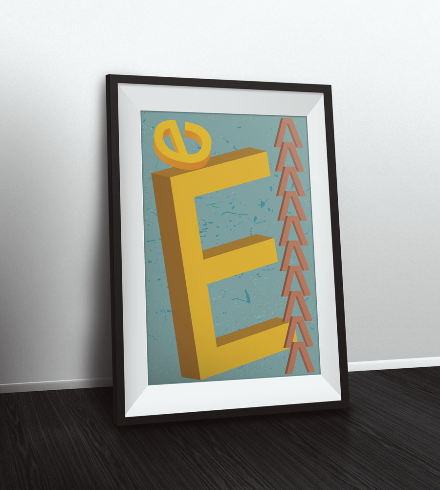
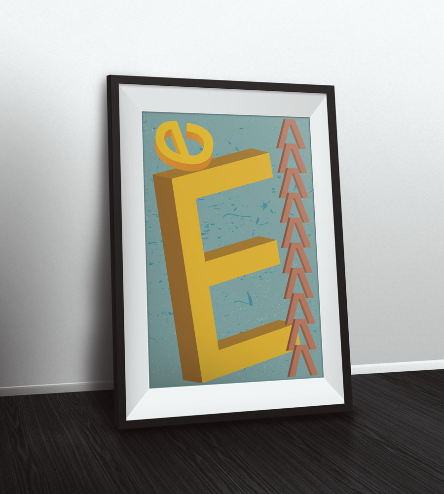
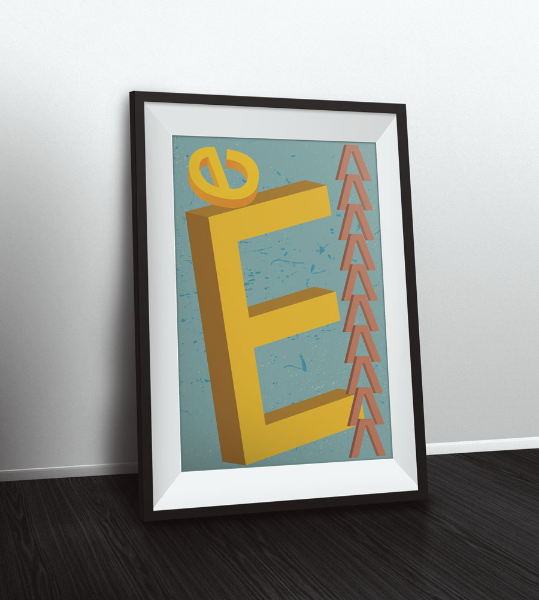
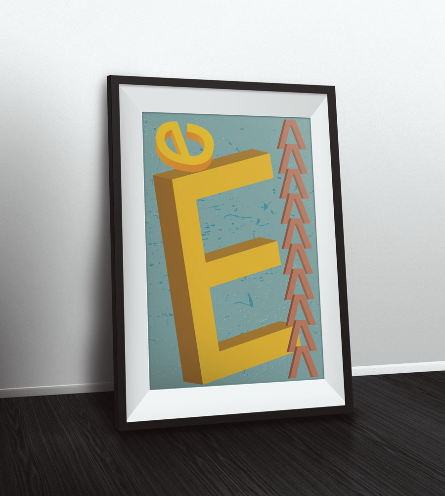

This is a glyph I designed that was made as a set of three. I created a capital E, a lower case e, and a carent symbol. I also had a chance to get the capital letter printed in 3D which was really awesome! For my glyphs I took inspiration from the most well known sans-serif fonts like Arial and Helvetica. I have a special place in my heart for condensed fonts so the end result was a condensed sans-serif capital E. I based my other three glyphs off the capital.
The poster design was fun because at the time I was learning 3D illustrations in Illustrator, and I thought what better way to showcase my new letter that would be printed in 3D than a poster depicting the glyphs in 3D. The end result is something I am happy with.
I'm currently available for work!
info@sonalsharma.ca